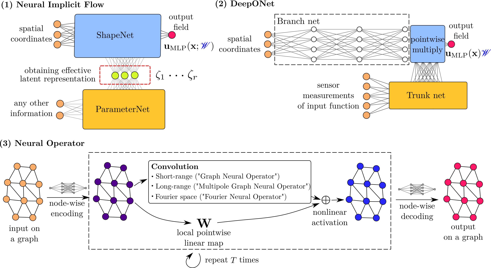

Neural Implicit Flow: a mesh-agnostic dimensionality-reduction paradigm of spatio-temporal data. The authors propose a general framework called neuralimplicit Flow (NIF) for modeling large-scale, parametric, spatial data. NIF consists of two modified multilayer perceptrons: (i) ShapeNet, (ii) ParameterNet, which accounts for any other input complexity, including parametric dependencies, time, and sensor measurements.
 There remains significant challenges in the depiction of high-dimensional spatio-temporal dynamics. They advocate a general mathematical framework called Neural-Implicit Flow (NIF) that enables a mesh-agnostic, low-rank representation of large-scale, parametric, spatial data. NIF leverages a hypernetwork structure that allows one to isolate the spatial complexity, thus accounting for all other complexity in a second-layer network where parametric dependencies, time, and sensor measurements are encoded and modulating the spatial layer.
Manifold-based approaches reduce the pro-hibitively large spatial degrees of freedom (e.g., O(104) in fiuid dynamics) into a moderate number. This preprocessing step can be viewed as learning a time-dependent vector-valued low-dimensional representation of a low dimensional representation of the PDE. Learning an effective lowdimensional representation is often domain specific, for example, using a real-valued matrix with RGB channels.
To the knowledge, NIF enables the first ever scalable 3D nonlinear dimensionality reductions on spatial-temporal datasets from arbitrary different meshes. NIF generalizes 40% better in terms of root-mean-square error (RMSE) than a generic MLP. Nif outperforms the state-of-the-art method (POD-QDEIM) in the task of data-driven sparse sensing with 34% smaller testing error on the surface temperature dataset.
NIF uses the bottleneck layer, which is linearly mapped to weights (and biases B) of ShapeNet, as the latent representation. Such a trained MLP (what they call ShapeNet) is closely related to the so-called neural implicit representation (Sitzmannet al., 2020), and works in computer graphics (Park et al., 2019) They begin by considering 3D spatial-temporal data with varying time/parameters. They use a second MLP to learn mappings from these parameters to weights W and biases B.
Dimensionality reduction assumes existence of a rank-r subspace that can approximate spatio-temporal data. The typical output dimension of ParameterNet is above thousands to tens of thousands. NIF can be viewed as a special family of hypernetworks for MLP with only spatial input x while any other factors, e.g., time t, parameter µ, are fed into the hypernetwork. Neural operators have been successful in recovering Green’s function, learning chaotic PDEs from data.
The skeleton of DeepONet can be viewed as that of a last layer parameterized NIF. NIF learns continuous nonlinear convolution in order to be mesh-invariant and spatial invariant. The method is attractive for engineering tasks that require many-query analyses. They will develop problem-specific,glyNIF-based frameworks on a variety of learning tasks. The following subsections will provide a framework for problem-spokeci-based models.
NIF is the simplest and most widely used type of parametric surrogate model (Qian et al. 2020; Loiseau et al., 2021) Despite the many disadvantages, including large sample complexityity, lack of interpretability etc., it is the most widely-used type of model. Configuration of NIF: ShapeNet with input x: 1-2,2-2-1, ParameterNet. with input t: 2-2 1-30-1-19. NIF can be applied to the DeepONet and NIF without access to prior knowledge.
SketchNet is a general MLP with activation function σ still to be determined. The failure of standard MLPs on high frequency datasets is a well-known phenomenon called spectral bias (Rahaman et al., 2019) and F-principle (Xu and Duraisamy, 2020) In this paper, they design ShapeNet with a special type of type of resNet-like structure. They propose a mesh-agnostic dimensionality reduction paradigm that makes NIF different from previous pipelines of dimensionality.
With SIREN for the ShapeNet, they can feed time t into ParameterNet to learn a compressed representation of the data. They use ω0 = 30 throughout this work. The number of total training data points M is the product of resolution on each dimensions, i.e., MxMtMµ. Therefore, in practice M is typically larger than $1.2 billion. Activation function becomes σ(·) = sin(ω0·
The Kuramoto-Sivashinsky equation is taken for illustration and further studied in section 3.1.1. They can build an encoder just using sensor measurements from only a few locations as input to the ParameterNet. Such applications are demonstrated in sections 3.2 and 3.3.2. NIF can also be used to build a new encoder for time t into the model of time t, such as a time-frame encoder, using sensor data from a single location.
The proper orthogonal decomposition (POD) was introduced to the fluidynamics community by Lumley in 1965 in order to give a mathematical definition of a “large eddy” by applying a Karhunen-Loeve expansion to turbulent velocity. In practice, the SVD is often used to obtain a discrete realization of POD modes. They employ NIF with SIREN in section 2.2 for the applications considered in the rest of this paper.
ParameterNet with input t is used to parameterize only the last layer weights and biases of ShapeNet. NIF only approximates the r-dimensional linear subspace rather than obtaining a set of ordered-ordered structures. The case of 3D HIT is taken for illustration here and further studied in section 3.3.2.3. The result is that they arrive at an interpretable approximation of the original spatio-temporal parameters of MLP as a sum of r products of spatial functions and temporal modes.
The goal of data-driven sparse reconstruction is to use limited sensor measurements to inferthe entire high-dimensional system state. POD-QDEIM is one of the most popular methods, which shows improved per-formance over classical compressive sensing techniques (Manohar et al., 2018) They use POD to minimize the former contribution of the spectral norm with column pivoting. The data matrix is a sparse measurement sparse measurement matrix with the canonical basis vectors with a unit entry at index i and zero entries.
A standard DMD (Brunton and Kutz, 2019) is performed on the latent representation. Python package for NIF is available athttps://://github.com/pswpsw/nif. The code and data for the following applications are available at https://://://www.g.cnn.org//NIF-Nif-FlowFlow-Flow-flow-paper. NIF-Flow Flow-Flow is based on an AMR dataset with AMR.
They apply the data-fitting parametric surrogate modeling framework in eq. (4) on the 1DKuramoto–Sivashinsky equation. Application of NIF on mesh-agnostic data-driven sparse reconstruction. Using NIF to model sparse reconstruction of sparse reconstructions. NIF is an example of a new paradigm in the theory of neural-implicit flow. Nif is a mesh-anonymous dimensionality reduction paradigm.
The training data is preprocessed with a standard normalization. NIF with Swish activation function (Ramachandran et al., 2017) is adopted. They adopt the Adam optimizer (Kingma and.Ba, 2014) with a learning rate of 1e-3, batch size of 1024 and 40000 epochs. They implemented both models in Tensorfiow (Abadi et al. 2016) As shown in table 1, NIF achieved better performance on both training and testing data than three MLP counterparts.
To achieve the same level of testing error, NIF requires approximately half of the training data. They vary the number of model parameters from 7000 to 34,000. They then train the models to evaluate model expressiveness. NIF lowers the testing error by half compared to MLP with Swish activation. The CFD simulation is performed with CASTRO (Almgren et al., 2010), which is a compressible hydrodynamic code with an AMR. The goal here is to encode the state onto an r-dimensional latent space, from which one can faithfully reconstruct the flow state.
They choose a typical deep convolutional architecture used for CAE and SVD. NIF is better than SVD and CAE with varying static mesh resolution from 32×64, 64×128 and 128×256. They project all of the predictions on testing data together with ground true data onto a very very fine mesh with resolution of 256×512. The learning rate is 2e-5 for NIF and 1e-3 for CCEE with a batch size of 3150.
Comparison of SVD, CAE with 32x64 (low), 64x128 (middle) and 128x256 (high) resolution for dimensionality reduction on testing data of 2D Rayleigh-Taylor instability on an adaptive mesh. If it is achieved, one can efficiently send a snapshot of turbulence data at any time t by transferring a r-dimensional vector to the receiver. While the receiver just needs a “skeleton” ShapeNet and a single linear-linear linear-transformed linear-formed mesh.
The last layer of ParameterNet is a very wide linear layer, with the width on the order of the total number of weights and biases of ShapeNet. For training, they use an Adam optimizer with a learning-rate of 1e-5 and batch size of 1600. The original dataset require a storage of roughly 1283 × 20 = 41, 943, 040, while the number of parameters need to be trained is 1, 297, 365 which is 3% of the former. NIF reconstructs ground true velocity even with small-scale structures very well.
Evaluation of compressed reconstruction from NIF on the U velocity field of the three dimensional homogeneous isotropic turbulence at three difference slices (xmax = 9.9) and t = 0 from JHU dataset (Li et al., 2008) They use the same HIT data with 1283 resolution(see section 3.3) The model setup is the same as before except that the width of the ShapeNet and that of the SIREN change from 36, 52, 75, 105 to 150.
Evaluation of compressed reconstruction from NIF on the PDF of velocity mag-ishlynitude, ∂u/∂x, 'y, and 'z' of the 3D HIT from JHU dataset (Li et al., 2008) at 5 different time instance. To further compare the performance, they measure CPU runtime and memory consump-tion of the spatial query part in the code with the standard Python package time and movie-memory-profiler.
NIF leads to 27.6% less neural network width, 30% less CPU time in forward and backward passes and 27%/24% less memory consumption in computations for the task of querying homogeneous isotropic turbulence data. NIF with SIREN is employed in both the use of both the NIF-based framework and ShapeNet. They test a linear subspace for a classical modal-analysis problem in fluid mechanics: vortex shedding behind a cylinder.
Efficiency comparison between NIF and SIREN in term of CPU runtime and memory consumption when performing spatial query test on half of the 1283 homogeneous isotropic turbulence. Note that the reconstruction error is computed based on the mean-squared error of last batch for every epoch with data shufflinging. Figure 14 shows relative reduction in computational cost of NIF compared with that of SIRen. CPU runtime, memory consumption and CPU runtime with network size.
They use a similar setup from Manohar et al.(2018) to compare with the state-of-the-art POD-QDEIM. They take snapshots from 1990 to 2006 as training data and that of the next 15-years, until 2021, as testing data. The space-time mean-squared error on training data of the NIF-based framework decreases as the number of sensors increases. They use Adam optimizer for mini-batch training with learning rate as 1e-5 and batch size as 7000 for 150 epochs.
The NIF-based framework with smallest testing error takes 600 sensors and results as 0.46, which is 34% smaller than the best model of POD-QDEIM. They compute a standard deviation of spatially mean squared error along time axis as an indicator for robustness of the model performance (see error bars in fig. 15) For the range of number of sensors considered, training error is significantly smaller than that of P
A mesh-agnostic representation for parametric spatial-temporal data, called neural implicit flow (NIF) is proposed. NIF can faithfully reconstruct the training data with higher confidence. This is particularly important for hyper-reduction in projection-based ROMs (Carlberg et al., 2011) The testing error bar of the framework is also smaller than that of POD-QDEIM, which means that the framework has higher robustness in predicting unseen data as well.
The authors thank Kevin Carlberg, Karthik Duraisamy, Zongyi Li, and Lu Lu for valuable discussions. The authors acknowledge funding support from the Air Force Office of Scientificognitive27-scientia-scientists. POD-QDEIM is a mesh-agnostic dimensionality reduction paradigm that reduces dimensionality by reducing it to a single dimensionality-reducing paradigm. The study was published in the journal Neurophysiology, published in Springer Springer Publishing Group, Springer Springer Group, August 2013.
The authors acknowledge funding from the National Science Foundation AI Institute in Dynamic Systems grant number 2112085. This work also used the Extreme Science and Engineering Discovery Environment (XSEDE) and the Bridges-2 system at the Pittsburgh Supercomputing Center (PSC) The authors also acknowledge the generous support from Prof.Karthik Duraisamy on using the following resources, which were provided by the NSF via the grant “MRI: Acquisition of ConFlux, A Novel Platform for Data-Driven Computational Physics”
State-of-the-art methods for dimensionality reduction rely on SVD and CAE. SVD relies on the assumption that spatio-temporal field is sampled from a single mesh for all parameters across all time. CAE treats the data as images by pre-processing with uniform pixelation. They use ETD-RK4 method to solve 1D Kuramoto-Sivashinsky equation in eq. (9), with periodic boundary condition.u(0, t) = u(2π, 0) and initial condition u(x) = sin(x).
Pan, Brunton and Kutz: Parametric variation of spatial temporal temporal field generated from Kuramoto-Sivashinsky system in x − t at different µ with 20 × 256 × 100 = 0.512 × 106 data points. Each data point has 4 components µ, t, x, u. Each component is normalized with zero mean and unit standard deviation. The goal of dimensionality reduction of parametric fluid system is to reduce the spatial complexity so that one may perform modeling, design or control.
The number of adaptive mesh points ranges from 40,976 to 72,753 across time. Training data starts from 83rd to 249th snapshot with skipping on the even snapshot: 83rd, 85th snapshot:. 85, 85,.. 248th snapshot. Training and testing data are not overlapping but they have no distribution shift. Each data point is a 35-dimensional row vector with 35 columns for the training data. The density for heavy fluid is 2 while that for the light fiuid is 1.5.
Simulation is performed from t = 0 s to t = 2 s with sampling ∆t = 0.0005 s. Reynolds number is Re = 2U∞r/µ∞ ≈ 123. The radius of cylinder is 0.0035 m. The finer mesh is based on vorticity where we're monitoring the magnitude of local vorticities monitored by the AMR. We're able to easily collect AMR data pointwise using pointwise data point
32 sensor locations are distributed evenly on the middle vertical axis. Since they are using NIFwith SIREN in appendix D, they normalize the t, x, y into uniform distribution between -1 and 1. They arrange the collected pointwise data into a big matrix, with 966,514 rows and 6 columns. For cell area ∆x, they scale it with a factor of 106. For output velocity u, v, they first normalize them into zero mean and normalize u into unit variance.
They use the forced isotropic turbulence dataset from JHU Turbulence dataset (Li et al., 2008) with Taylor-scale Reynolds number Reλ around 433. The simulation is computed by solving the Navier-Stokes equation with pseudo-spectral method. To sustain the system, energy is injected into the large scales. After the system reaches the equilibrium state, the original dataset consists snapshots collected at every 0.02 nondimensionalized time. They use NIF with SIREN in appendix D, they normalize the range of t, x, y so that the range is normalized.
They obtain weekly averaged sea surface temperature data since 1990 to present from NOAA website 8.5 Sea Surface Temperature. They use temperature field as training data with a total number of 36,790,208 data-points. NIF with Swish generalizes better than other configurations especially when µ > 0.25. They consider further changing the size of training data to verify if NIF-Swish still performs better than MLP (Swish)
Comparison among fthe model configurations in terms of RMSE on the dataset of 1D parametric KS system with 0.2 < µ < 0.28.2: RMSE below is averaged over all parameters. Comparison between standard MLP and NIF in section 2.1 for surrogate modeling of PDE. Figure 20 shows the RMSE of the fthe models. Figure 20 is based on the data from NIF-Swish, MLP-Swis, MLPS-Tanh and MLP ShapeNet/Vanilla MLP shapeNet.
Training data contains training numbers of simulations from 15 to 29 simulations. The decoder contains a linear dense layer followed by a dense layer and two consecutive dilated transposed convolutional layers followed by batch-like layers. Training data is fed to the decoder, which contains simulations of 15 simulations. NIF-Swish is the latest version of the system to be published in the Open Source Library of Scientific Computing (OSC) and Kutzar's (CSC) version of this article.
The shape of POD output is 128×256, and the shape of CAE out-put varyes from 32×64, 64×128, 128x256. They use nearest-neighbor to obtain the projection onto 256×512 using the transform.resize function in scikit-image pack-type. The last layer is a dilated transpose convolutional layer that maps to the same size as input. For the best results, they do not use any pooling layers throughout.
Pan, Brunton and Kutz: uPOD,128×256: output prediction from POD on the 128 × 256 Cartesian mesh, uCAE, 32×64: output predictions from CAE on the 32 × 64 Cartesian meshes, UNIF as the output prediction of NIF evaluated on the 256×512 mesh. They define the following three error metrics at each time t: “POD”, “CAE” and “NIF” are the same metrics for other models. Fitting error contributes the most in POD while projection error is more than two orders of magnitude smaller.
They adopt SIREN (Sitzmann et al., 2020), which is standard MLP with ω0-scaled sine-activations, as the ShapeNet. POD-QDEIM misses small scales structures while NIF-based framework captures them well. As one increases the number of sensors, the training error of both models decay drastically. They also borrow the ResNet-like structure to further improve training-performance, which is presented in appendix D.2.3.
SIREN requires a special initialization of weights and biases to achieve superior performance. They use a design of ResNet-like block (Lu et al., 2021c) to build ShapeNet. The configuration is displayed in fiG.5.1.2.3 Building ParameterNet. The next step is to connect the output of Parameternet to ShapeNet. They only need to carefully design the design the initialization of last layer weights and bias to be consistent with the requirement in appendix D.1.